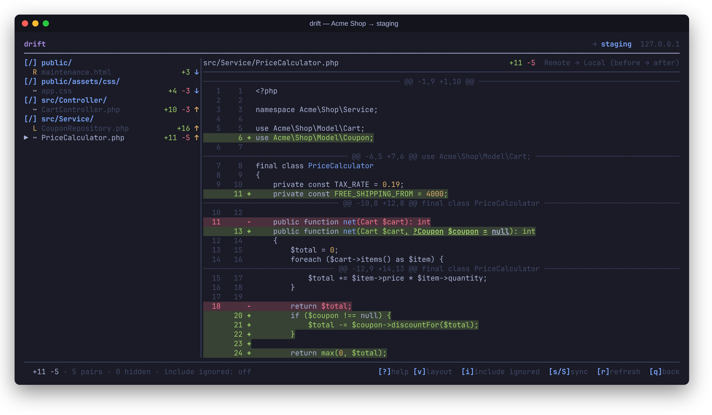

Dateien mit dem Server abgleichen
drift ist ein Open-Source-Werkzeug für das Terminal. Es vergleicht dein lokales Projekt Zeile für Zeile mit dem Server und überträgt per SFTP, FTP oder FTPS nur die Änderungen, die du freigibst.

 im Einsatz
im Einsatz
Jede Änderung vor dem Upload sehen
Der Diff zeigt hinzugefügte und entfernte Zeilen mit Syntaxhervorhebung. Für jede Datei wählst du Upload, Download, Löschen oder Überspringen. Die Richtung schlägt drift anhand der Änderungszeiten vor.


Lokales Projekt und Server nebeneinander
Mit @ verbindest du die rechte Seite mit einem Host. Mit der Leertaste markierst du Dateien oder ganze Ordner, mit s öffnest du den Vergleich.

Mehrere Projekte, eigene Hosts
drift dash öffnet die Projektübersicht. Jedes Projekt hat eigene Hosts und Pfadzuordnungen. Im Dateibrowser wechselst du mit P das Projekt.

Ein Upload in 27 Sekunden
Die Aufnahme zeigt Dateiauswahl, Diff und bestätigten Upload. Beim nächsten Vergleich stimmen lokale Datei und Serverdatei überein.
Was außerdem kann
Serverdateien im eigenen Editor bearbeiten
drift lädt die Datei erst nach deiner Bestätigung hoch und prüft vorher, ob jemand sie auf dem Server geändert hat.
Pfade pro Host zuordnen
Ein lokaler Ordner kann auf Staging und Produktion unter verschiedenen Pfaden liegen.
Eine Verbindung für mehrere Projekte
Projekte auf demselben Server teilen sich Verbindung und Zugangsdaten.
FTPS-Zertifikate prüfen
Ausnahmen für unbekannte Zertifikate gelten für die Sitzung oder dauerhaft.
Keine Dateien im Projekt
Die Konfiguration liegt in
~/.config/drift/. drift beachtet deine.gitignore.Passwörter aus Umgebungsvariablen
Hostdateien haben die Rechte
600. Statt eines Passworts kann dort$ENV_VARstehen.
installieren
Du brauchst Linux oder macOS, Go ab Version 1.25 und Git. Das Go-Binärverzeichnis muss in deinem PATH stehen.
go install github.com/WariKoda/drift@latest
Starte drift im Projektordner. Mit H öffnest du die Hostverwaltung, mit n legst du deinen ersten Host an. ? zeigt auf jedem Bildschirm die verfügbaren Tasten.
Häufige Fragen
Was ist drift?
drift ist ein kostenloses Open-Source-Programm für das Terminal unter Linux und macOS. Es zeigt die Unterschiede zwischen deinem lokalen Projekt und einem Server als Zeilen-Diff und überträgt per SFTP, FTP oder FTPS nur die Dateien, die du freigibst.
Für wen ist drift gedacht?
Für Entwicklerinnen und Entwickler, die Websites oder Anwendungen per SFTP oder FTP auf Webspace, Staging- oder Produktionsserver übertragen und vorher sehen wollen, was sich ändert.
Welche Protokolle unterstützt drift?
SFTP, FTP und FTPS. Bei FTPS prüft drift das Serverzertifikat. Ausnahmen kannst du für eine Sitzung oder dauerhaft erlauben.
Läuft drift unter Windows?
Nein. drift läuft unter Linux und macOS.
Was unterscheidet drift von FileZilla oder rsync?
FileZilla überträgt Dateien, zeigt vor dem Upload aber keinen zeilenweisen Vergleich. rsync braucht SSH-Zugang und rsync auf dem Server und unterstützt kein FTP. drift zeigt für jede Datei den Diff und überträgt erst nach deiner Freigabe.
Legt drift Dateien in meinem Projekt an?
Nein. Die Konfiguration liegt in ~/.config/drift/. Pfade aus deiner .gitignore lässt drift beim Abgleich weg, solange du sie nicht mit i einbeziehst.
Wo speichert drift Zugangsdaten?
In den Hostdateien unter ~/.config/drift/projects/. drift legt sie mit den Rechten 600 an. Statt eines Passworts kann dort der Name einer Umgebungsvariable stehen, etwa $FTP_PASSWORD.
Was kostet drift?
Nichts. drift steht unter der MIT-Lizenz, der Quellcode liegt auf GitHub.